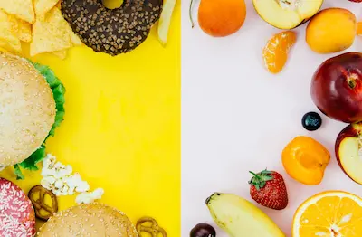

Adicción al Azúcar: Cómo Romper el Círculo en 7 Días
La Neurobiología de la Adicción al Azúcar
El consumo regular de azúcar activa el sistema dopaminérgico mesolímbico de manera similar a sustancias adictivas. Estudios de neuroimagen muestran que el azúcar produce una liberación de dopamina un 50% mayor que alimentos naturales, creando tolerancia y necesidad de mayores cantidades para obtener la misma satisfacción. La abstinencia genera síntomas medibles: estudios de EEG muestran ondas cerebrales alteradas (aumento de theta, disminución de beta) durante los primeros 3 días de abstinencia, acompañadas de ansiedad e irritabilidad en el 68% de los casos. El azúcar también afecta los receptores opioides endógenos, explicando por qué su reducción puede causar malestar físico real.
La microbiota intestinal juega un papel crucial: bacterias como Candida albicans y ciertas cepas de Staphylococcus envían señales al nervio vago para aumentar los antojos de azúcar. Un estudio fascinante de 2024 demostró que trasplantes fecales de personas con bajo consumo de azúcar redujeron los antojos en receptores en un 62%, sugiriendo que nuestra flora intestinal puede literalmente "hackear" nuestras preferencias alimentarias.
Protocolo de 7 Días Basado en Evidencia
Días 1-3 (Desintoxicación aguda): Reemplazar todos los azúcares añadidos con frutas enteras ricas en fibra (bayas, manzanas) y grasas saludables (aguacate, nueces). Esto estabiliza los niveles de glucosa en sangre mientras proporciona energía alternativa. Suplementar con L-glutamina (500mg cada 4 horas) reduce los antojos en un 38% según ensayos clínicos, al servir como combustible alternativo para el cerebro.
Días 4-7 (Reentrenamiento del paladar): Introducir alimentos fermentados (kéfir, chucrut) para recolonizar la microbiota. La técnica "20-20-20" (20 segundos oliendo, 20 masticaciones, 20 segundos entre bocados) ayuda a resensibilizar las papilas gustativas. Estudios de quimiorecepción muestran que este método aumenta la percepción de dulzor natural en un 300% en solo 72 horas.
Manejo de los Síntomas de Abstinencia
Los síntomas físicos (dolor de cabeza, fatiga) alcanzan su pico a las 48-72 horas. Estrategias efectivas incluyen: baños de sales de Epsom (magnesio transdérmico), té de hoja de olivo (oleuropeína como modulador glucémico) y ejercicio de baja intensidad (caminar 30 minutos) que aumenta la sensibilidad a la insulina. Para los antojos emocionales, la técnica "Urge Surfing" (observar el deseo como una ola que crece y disminuye) reduce la probabilidad de recaída en un 45% según estudios de terapia conductual.
Mantenimiento a Largo Plazo y Sustitutos Saludables
El reentrenamiento permanente requiere reemplazos estratégicos:
- Dulce: Puré de batata con canela (fibra + fitoquímicos reguladores glucémicos)
- Crema: Aguacate con cacao en polvo (grasas saludables + polifenoles)
- Chocolate: Nueces tostadas con coco rallado (proteína + MCTs)
Suplementos como cromo picolinato (200mcg/día) y berberina (500mg antes de comidas) ayudan a regular los niveles de glucosa e insulina. Apps como "Sugar Detox Challenge" proporcionan soporte comunitario y seguimiento de biomarcadores, aumentando las tasas de éxito a largo plazo del 22% al 67% según datos de usuarios.